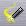

This Guide was written to quickly get you up to speed in the basics of music composition with Sequitur. Screenshots may vary slightly due to different MIDI devices running on your system.
| 1. Getting Ready |
| 1.1. Sequitur is a MIDI sequencer written by Angry Red Planet. After installing the Sequitur package you'll find the Sequitur icon in Deskbar's Application menu. |
| 2. The Basics |
2.2. The song window contains a set of tape deck-style transport controls for controlling song playback. None of these controls will function until there is data in the song.
| Rewind. Rewind the song position to the beginning of the song. The song position is indicated by the arrow in the measure control. | |
| Play Song. Play the entire song from the current song position. | |
| Stop. Stop playback. | |
| Record Mode. Toggle record mode on or off. | |
| Loop Mode. Toggle loop mode on or off. |
2.3. Sequitur makes use of filters to control the flow of MIDI data on your system. Take a look at all available MIDI devices and filters in your system by selecting Windows --> Filters. Through filters will be discussed later in this guide. Note that your Manage Filters window may vary depending on what MIDI devices you have connected.
| 3. Basic Tools - Create And Edit Notes |
3.2. In the track window, use your primary mouse button (by default the left on two and three button mice) to place a few notes down anywhere on the grid. If you have speakers connected to your sound card, you should hear the notes played as they are placed. Note the song window updates to display the new notes. These notes are placed via the Pencil tool, one of the four basic tools used to manipulate MIDI events. In order they are:
| Pencil tool. Used to place notes in a track. Single clicking on a note with the Pencil tool will select the note while clicking and dragging will move the note around in the track. | |
| Select tool. Used to select notes in a track. Clicking and dragging will box an area to be selected. | |
|  | Wand tool. The Wand tool allows you to edit your notes. Clicking and dragging to the left and right on a note will shorten and lengthen it, while dragging up and down changes the velocity. |
| Eraser tool. Click and drag to erase notes. |
3.3. There are more tools available which we'll explore later on. On three button mice, any tool can be assigned to the first two mouse buttons by clicking on the tool with the desired button. The image to the left of the basic toolbar shows you which tools are assigned to which buttons. By default, the Pencil tool is assigned to your primary mouse button, and the Wand tool is assigned to your middle mouse button. With the Wand tool, click and drag on one of the notes you just placed down. Dragging to the right lengthens the duration, while dragging left shortens it. Dragging up will increate the volume and dragging down softens the note. Use the Select tool and place a box around a group of notes. Active notes turn red. Grab the Wand tool again, and try lengthening all the selected notes. When you depress the mouse button, you'll hear the effect of your editing. Remember that clicking the Stop button will halt playback. Try removing a few notes with Eraser tool. Alternatively, you can use the Select tool to box a group of notes, and hit the delete key on your keyboard.
3.4. The track window contains its own set of transport controls. These controls only play the visible area of the track.
| Play Song. Play the entire song, from the left edge of the track window to its right edge. | |
| Play Track. Play only this track. Mute all other tracks in the song. | |
| Stop. Stop playback. | |
| Loop Mode. Toggle loop mode on or off. |
| 4. Change Instruments |
5.1. Now that you've added a few notes, let's add some drums. Go back to the song window and change the MIDI channel on the output filter for 'Be MIDI Synth - 2' to 10 by double-clicking the filter and selecting 10 from the Channel menu in the filter settings window. The Be MIDI Synth filter icon changes to reflect the new channel. Channel 10 is the General MIDI default for drum kits, which means that all the notes we place down in this track will be sounds on a drum kit.
5.2 Rename this track to 'Drums' by single-clicking on the text 'Be MIDI Synth - 2' in the song window and entering a new name. Hit return to accept the change. Double-click in the phrase area to open up the track window for the Drums track as you did for the first track
5.3 Open the Manage Tools window by selecting Windows->Tools. The tools in this window are your gateway to accessing Sequitur's extensive framework for manipulating MIDI events. Each tool contains a series of instructions which controls how it processes MIDI data. For our drum riff, we'll use the tool Hot Beat Injection. Go back to the track window and check Tool Bars->Show->ARP Advanced to activate the ARP Advanced tool bar (alternatively, you can drag the Hot Beat Injection tool from the Manage Tools window to the desired location of any tool bar in any track window). Choose 1/16 notes from the quantize icon, located just to the right of the loop button on the transport control. You'll notice that the track's grid will update to reflect the new quantize setting. Assign Hot Beat Injection to the left button of your mouse by clicking the icon in the tool bar. Notice that the mouse image updates to show that Hot Beat Injection is assigned to your left mouse button. At the beginning of a measure click and hold the mouse button. You'll see that a few 1/16 notes have been placed down in the track. Now drag the mouse around, carving a different riff with every mouse gesture. Each time you move the mouse, you'll hear a different riff play. When you're satisfied, let go of the mouse button. Remember, your primary mouse button is Hot Beat Injection, so you might want to reassign that button to the Pencil tool now. Though, don't worry if you happen to lay down a series of notes on top of your masterpiece, there's always Edit->Undo!
5.4 Click the Play Song button to hear both tracks together (the solid play button). Notice that the notes for the previous track appear grey, giving you a frame of reference for the new notes in this track. The Shadow tracks: knob under View->Saturation... can be used to lighten or darken the notes of other tracks.
6. Song Manipulation
6.1. Go back to the song window and open the filters window (if it's not already open) from Windows->Filters. From this window, select the Echo filter and drag it to the first slot of the output pipeline in the 'Be MIDI Synth - 1' track. At this point, current notes in this track, as well as any new notes you place down, will have the Echo filter automatically applied to them. Any number of through filters may be placed in the pipeline. Filters placed in a track's output pipeline will apply only to that track. Press the Play button to hear the echo applied to the first track.
Sequitur includes a complex framework for MIDI processing, allowing application of filters to many different composition situations. In the song window, hover over the Echo filter, click the property menu that appears in the upper left corner, and select bypass. Sequitur will ignore the Echo filter, and send all events to the next node in the pipeline, which in this case is the output filter.
6.3. In the song window, click on the M (mute) button to the left of 'Be MIDI Synth - 1' to mute the first track, and hear the Drums alone.
6.4. The song windows is a good place to manipulate the structure of your song because it allows access to groups of MIDI events, called phrases. You can manipulate phrases in many ways. Copy them to a new location -- even a different track or song, move them, delete them, even change the color. With the right mouse button (or middle button on two button mice) click the phrase containing your drum riff. Remeber, this should be the second Be MIDI Synth track -- the one you labeled 'Drums'. With the mouse button pressed, drag the phrase a few measures over to the right. When you let go of the mouse button, a pop-up menu will ask you to 'move' or 'copy' the phrase to the current location; choose copy. You've now duplicated the drum riff for two more measures.
| 7. Record a New Phrase |
7.1. From the filters window, drag the MIDI input/output filter that will be sending MIDI events to the input pipeline for the track you wish to receive MIDI events. In this example, track 34, we're using the first port for a Yamaha UX256 MIDI interface (where the keyboard is connected) to send data to a device connected to the second port of the Yamaha UX256 (a tone module).
7.2. Click on the track number for the desired track. You'll notice it becomes highlighted yellow, indicating that it's selected.
7.3. Prepare the song for recording by pressing the Record button in the song's transport controls. The highlight color will change to red, indicating the selected track is armed to receive MIDI events.
7.4. Click and drag the song position indicator in the measure control, placing it where you want recording to begin. Press the Play Song button to begin recording. The events will appear as you're playing. When Record mode is enabled, the song will not automatically stop. Press the Stop button when you're finished recording.
| 8. Save Your Work |